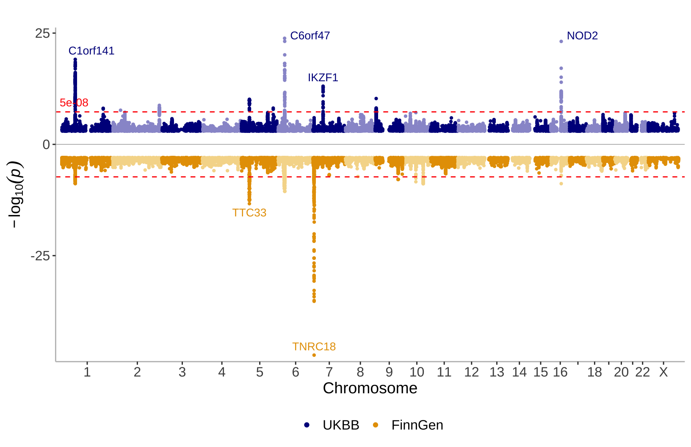

About
topr is a collection of plotting functions for visualizing and exploring genetic association results. Association results from multiple phenotypes can be viewed simultaneously, over the entire genome (Manhattan plot) or in the more detailed regional view.
topr utilises the ggplot2 and
ggrepel R graphics libraries for plotting.
For more details, see the topr github page and the topr publication.
Libraries
The topr package can be installed from CRAN using
install.packages(“topr”).
After installing the package it can be loaded as follows:
Dataset
topr comes with three inbuilt datasets (CD_UKBB,
CD_FINNGEN and UC_UKBB). These datasets were
originally retrieved from the UK biobank and FinnGen respectively, and
are association results (GWAS) on Crohn’s disease (CD) and Ulcerative
colitis (UC).
Input datasets must include least three columns (CHROM,
POS and P), where naming of the columns is flexible
(i.e the chr label can be either chr or chrom and is case insensitive).
For more details, see topr
input datasets.
Basic usage
topr’s two main plotting functions are
manhattan() and regionplot().
manhattan
Create a Manhattan plot using the CD_UKBB dataset
Annotate the top variants (with p-values below 5e-9) with their nearest gene:

Show multiple datasets on the same plot using two y-axes and specify
how many datasets to show on the ‘top’ and on the ‘bottom’ with the
ntop argument.

Highlight SNPs of interest
snpsOfInterest <- get_snps_within_region(CD_UKBB, region="chr1:67038906-67359979")
manhattan(list(CD_UKBB, snpsOfInterest), color=c("darkblue","red"), legend_labels=c("CD UKBB","SNPs of interest"))See how-to-color-specific-peaks-on-the-manhattan-plot for more details.
regionplot
Displays association results for smaller genetic regions defined by the gene name:
## [1] "Zoomed to region: chr1:67038906-67359979"View the correlation pattern between the variants within the region in a locuszoom like plot.
Note that the variant correlation (R2) has to be
pre-calculated and included in the input dataframe.
## [1] "Zoomed to region: 1:67042284-67359988"